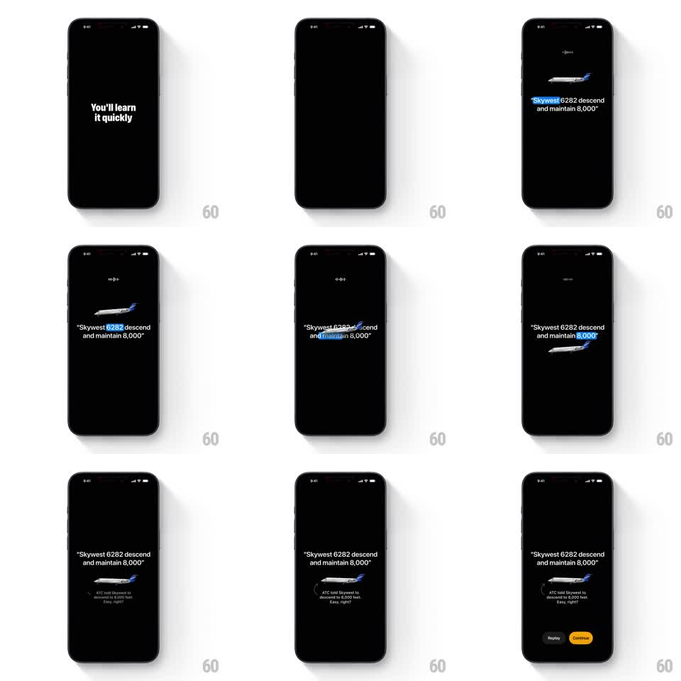

Media
Frame-by-frame

Rebuild this interaction 1:1: ATC's flight onboarding - on a black screen an air traffic control command plays, each word highlighting in blue in sync with the audio while a plane graphic descends, then a recap line and Replay/Continue buttons land.

Rebuild this interaction 1:1: ATC's flight onboarding - on a black screen an air traffic control command plays, each word highlighting in blue in sync with the audio while a plane graphic descends, then a recap line and Replay/Continue buttons land.
## Integration
Integration: stack-agnostic spec - springs given as stiffness/damping, timed motions as duration + curve; map every value to your framework and animation library of choice.
## Scene
Full-bleed black onboarding step. Center stage: a small airplane graphic and the quoted radio call "Skywest 6282 descend and maintain 8,000" in white type. A tiny audio waveform icon sits above the plane while the call plays. End state adds a caption ("ATC told Skywest to descend to 8,000 feet. Easy, right?") and Replay / Continue buttons at the bottom.
## Motion spec
Pattern: audio-synced word highlighting with a synced descent graphic, then a CTA reveal.
- The plane enters from the top edge and begins a slow descent (translate down ~200px over the full clip, linear).
- Each spoken word highlights blue for its audio window (Skywest -> 6282 -> descend -> and maintain -> 8,000), ~300-500ms per word, hard on/off with no fade.
- The plane's descent rate tracks the words "descend and maintain": it visibly pitches and drops faster during that window, then levels out.
- The waveform icon animates (bar heights cycle, ~400ms loop) only while audio plays.
- After the last word, the caption fades up from 12px below (300ms) and the two buttons pop in (scale 0.9 -> 1, 250ms, 80ms stagger, Continue in yellow).
## Calibration
- Word timing must lock to the audio; the highlight is a transcript follow-along, not decoration.
- The plane levels off exactly when the call ends.
## Reduced motion
Plane holds mid-screen static; words highlight without plane movement; caption and buttons fade in (200ms).
## Don't miss
- The blue highlight hits exactly one word group at a time.
- Continue is the only colored (yellow) element; Replay stays a ghost button.